A bathroom sink gets used more than almost any other surface in the house, and yet it's one of the last places people think to actually style.
A few small, deliberate choices here, a tray, a matching accessory set, a bit of restraint, make a disproportionate difference given how little space is actually involved.
None of the ideas below require replacing the vanity or the fixtures. Most work as small swaps layered on top of what's already there.

Why Sink Decor Deserves More Attention
A sink area gets looked at and touched daily, which makes it one of the highest-impact spots in a bathroom to style well.
A tray, a coordinated soap dispenser, and a neatly folded towel can shift the whole counter from purely functional to genuinely considered, without touching anything structural.
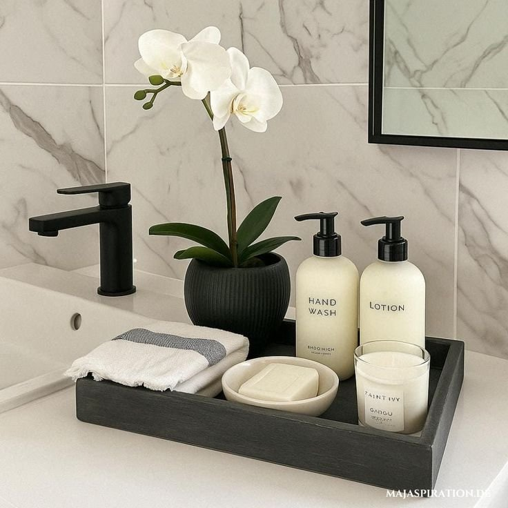
1. Know When to Stop
This matters more than any single decor item on this list.
Negative space gives a sink area genuine room to breathe, which is easy to forget once a counter starts filling up with individually nice pieces.
A reliable rule of thumb: once the styling feels finished, remove one more item. It works more often than not.
2. Add a Subtle Metallic Accent
Metal adds polish to a sink area quickly.
Brass, matte black, or chrome, used in small doses, bring a bit of shine without turning the whole counter into a showroom display.
One metallic accent is genuinely enough. A little goes a long way here, and more than one tends to compete rather than complement.
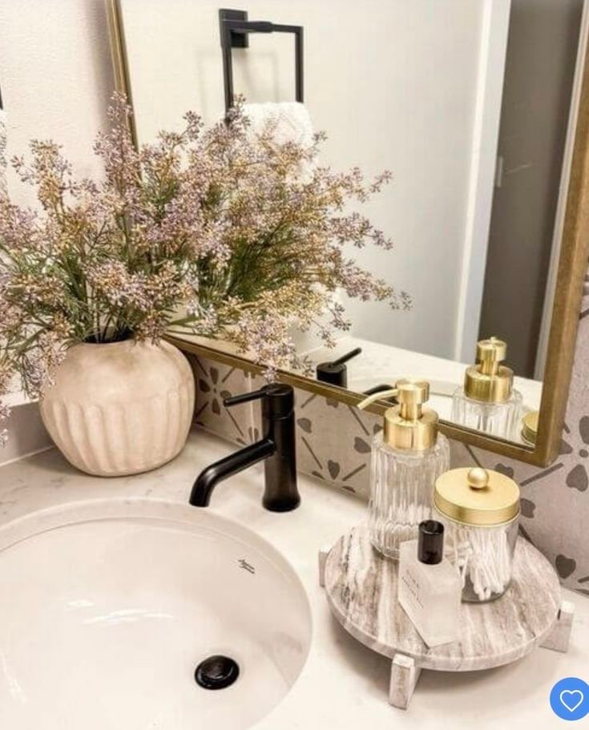
3. Display Everyday Items in Glass
Glass makes purely functional items look genuinely intentional.
Cotton pads and swabs read as lighter and cleaner once they're transferred into a glass jar rather than left in their original packaging.
The trick only works if the containers aren't overfilled. A jar crammed to the top undoes the clean look almost entirely.
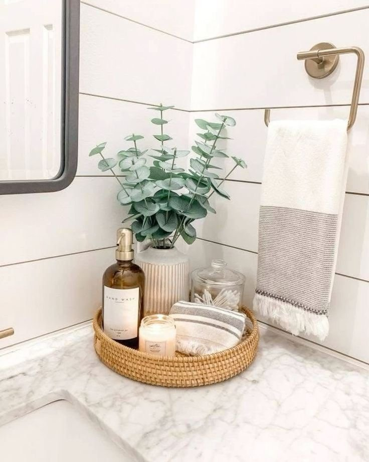
4. Stick to a Tight Color Palette
Too many colors on a small countertop create visual chaos fast.
Sticking to two or three colors across all the sink-area items keeps the whole arrangement feeling considered rather than accidental.
A tight palette also removes a lot of the guesswork when adding new pieces later, since anything outside that range simply doesn't make the cut.
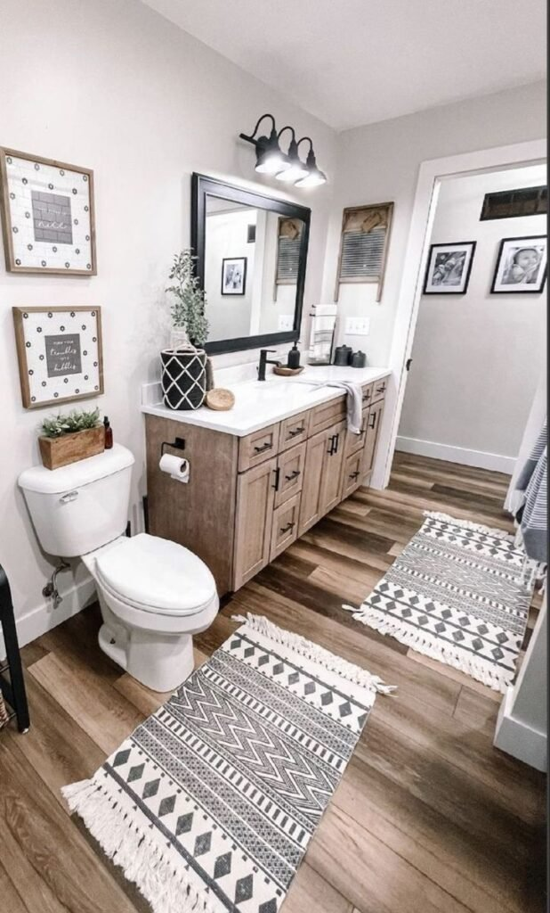
5. Create Height With One Vertical Element
Flat decor tends to look unfinished, no matter how nice the individual pieces are.
A tall soap dispenser, a slim vase, or a standing brush holder adds genuine visual balance to an otherwise flat countertop.
One vertical piece is usually enough. It gives the eye somewhere to travel upward rather than staying locked on one flat plane.
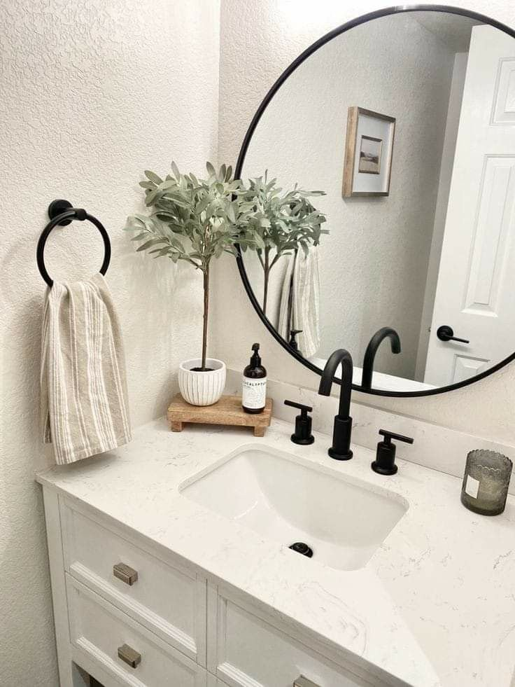
6. Keep Countertop Storage Minimal
Storage should stay out of sight unless it's genuinely attractive enough to be seen.
Clear jars, slim containers, or hidden drawers all work well for keeping sink-area items tucked away without looking cluttered.
A visually calmer counter tends to make mornings feel calmer too. Less to look at means less for the eye to process first thing.
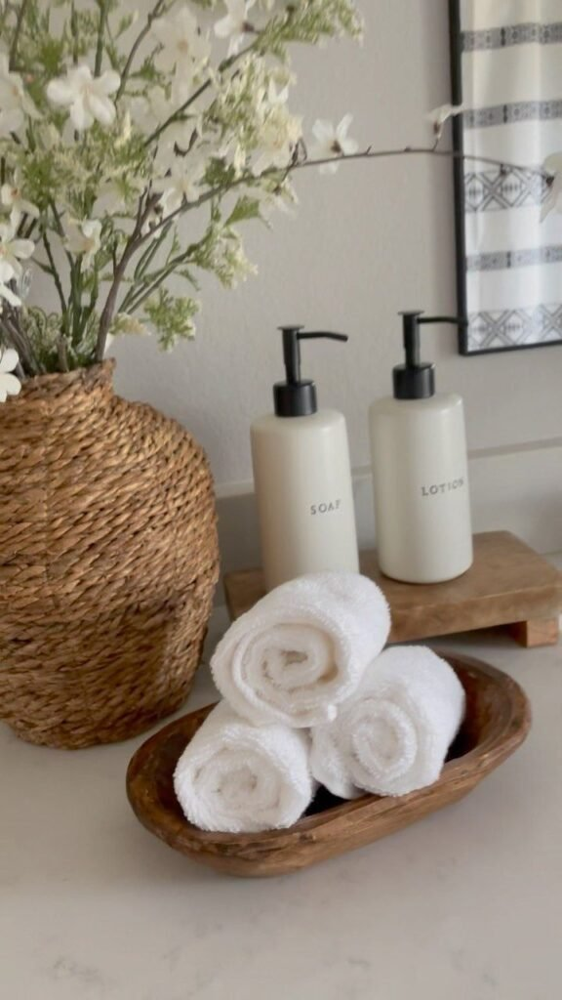
7. Add Natural Materials for Warmth
A bathroom feels cold fast without some kind of texture to balance it out.
Wood, stone, and ceramic soften the space and offset the glossy, hard surfaces that dominate most bathroom counters.
Even one wooden tray is often enough to shift the whole mood of the sink area toward something warmer.
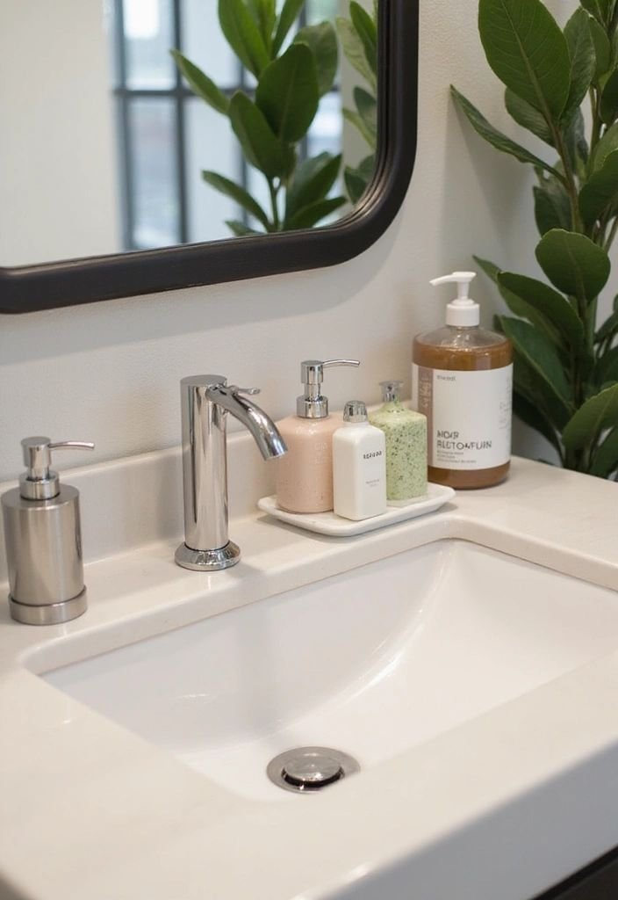
8. Swap to a Decorative Soap Dish
Bar soap reads as genuinely intentional once it's styled correctly.
A stone, marble, or ceramic soap dish adds real texture to the counter while still keeping everything tidy.
It's a small swap, but one that shifts the whole sink area from purely functional to actually styled.
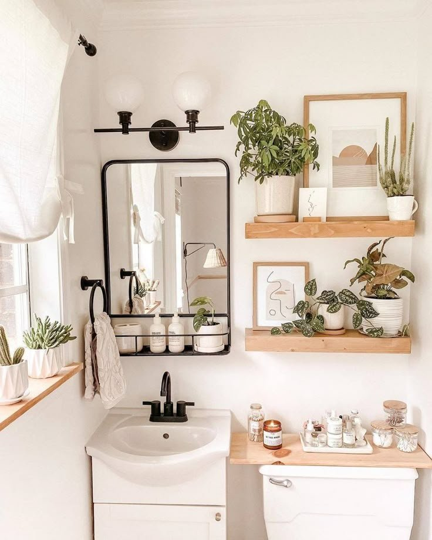
9. Lean Art or a Small Mirror Nearby
Leaning a piece of art against the wall adds real personality without requiring any commitment.
It reads as collected rather than staged, since nothing is permanently mounted.
This trick works especially well in a rental, where it delivers genuine personality with zero wall damage.
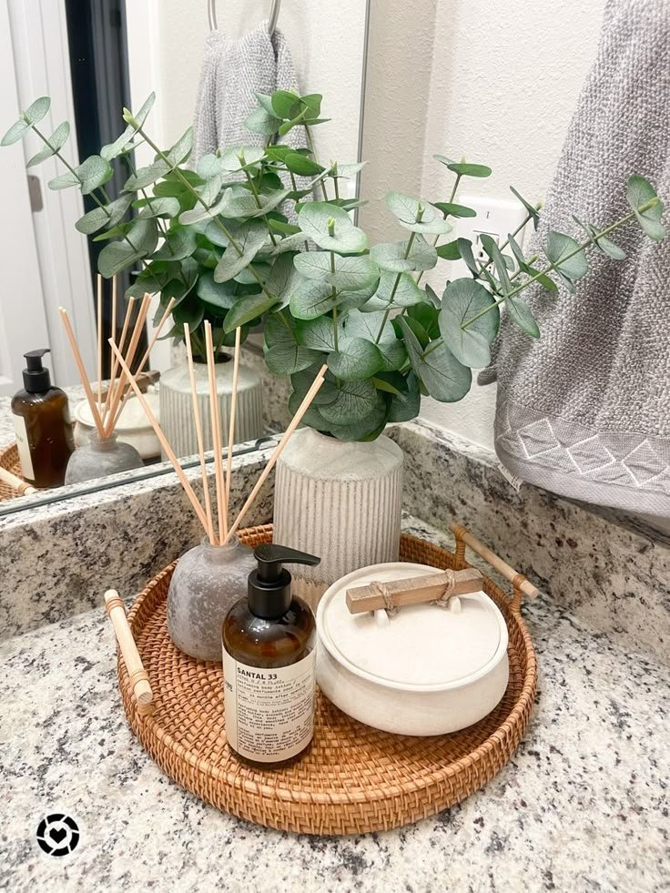
10. Add a Subtle Scent Element
A bathroom should smell as considered as it looks.
A candle or a diffuser adds warmth to the sensory experience of the room without cluttering the actual sink surface.
Subtle fragrances work best here. This isn't the spot for an overpowering floral scent competing with everything else going on in the room.
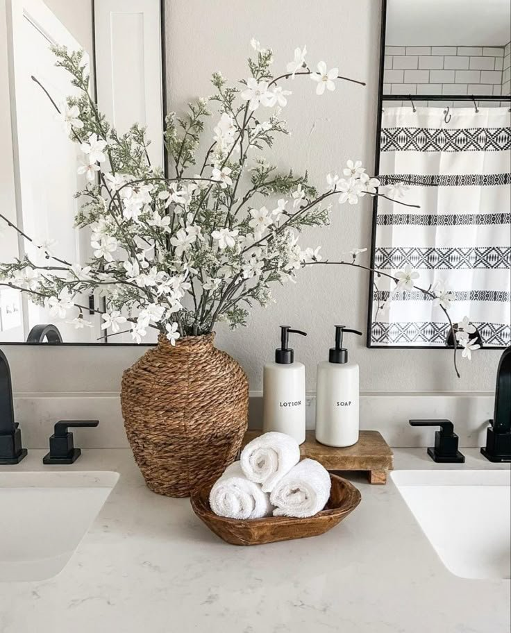
11. Stick to Matching Accessories
A matching accessory set can feel boring in theory, but it genuinely works in practice.
Matching soap dispensers, trays, and holders calm down visual noise, especially in a small bathroom where every item on the counter competes for attention.
Cohesive accessories tend to read as more intentional than a mismatched collection, even when each individual piece is perfectly nice on its own.
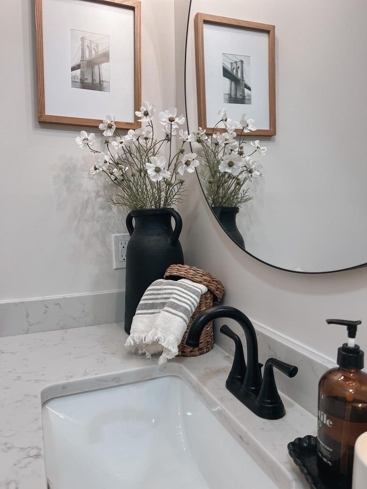
12. Style Your Hand Towels Instead of Tossing Them
Messy towels undo good sink styling faster than almost anything else.
Folded or rolled towels add real softness and order to the counter. It's a trick hotels rely on consistently for good reason.
A neatly styled stack of towels reads as considerably cleaner than the same towels left in a loose pile, even when nothing else about them has actually changed.
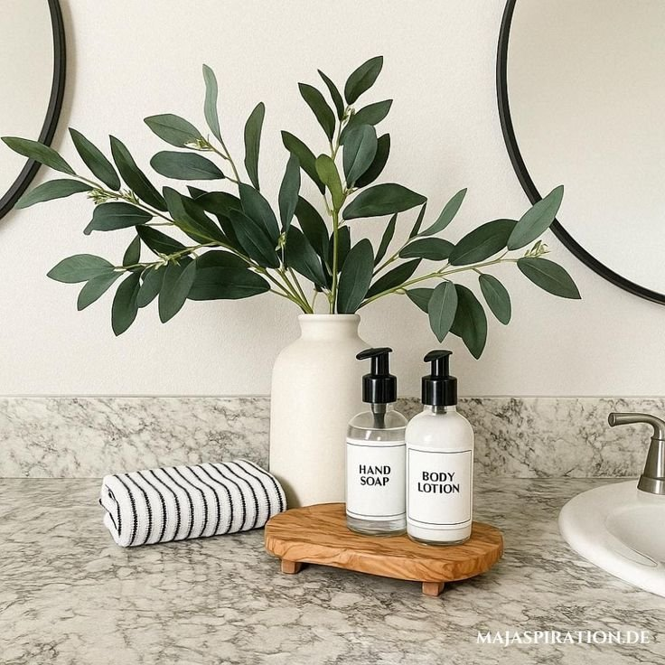
13. Add a Touch of Greenery
Plants soften a bathroom almost instantly. Even a single small one changes the whole feel of the counter.
Greenery balances out the hard, cold surfaces a bathroom tends to be built from, porcelain, tile, glass, with something organic and alive.
In a bathroom with limited natural light, a realistic faux plant works just as well, since the visual effect comes from color and shape rather than whether the leaves are real.
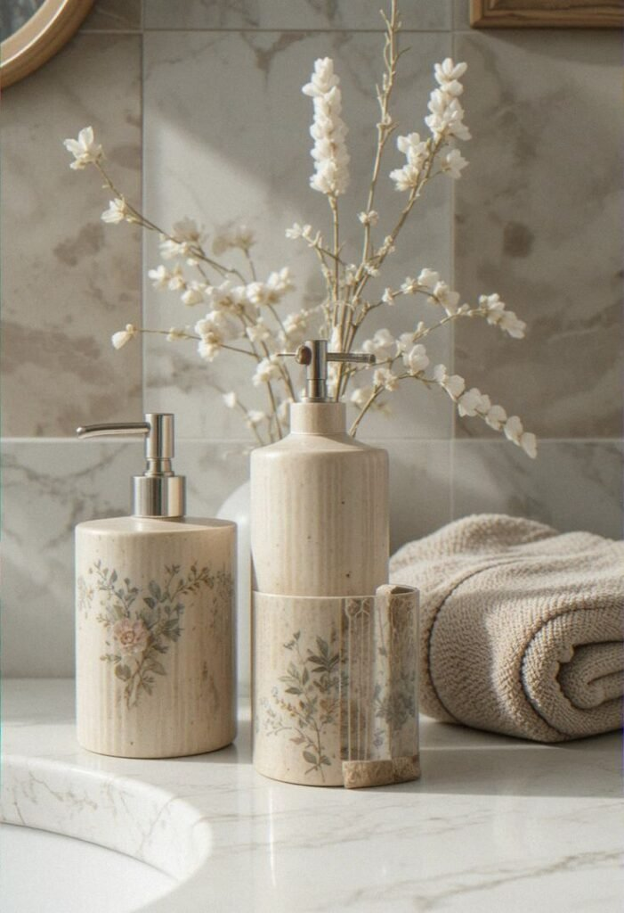
14. Upgrade the Soap Dispenser
The plastic soap bottle straight from the store undoes a lot of otherwise good styling.
A quality soap dispenser functions almost like jewelry for the sink area. Same soap inside, considerably better presentation.
It's a small, one-time swap, but it's the kind of detail that tends to get noticed daily rather than just on first impression.
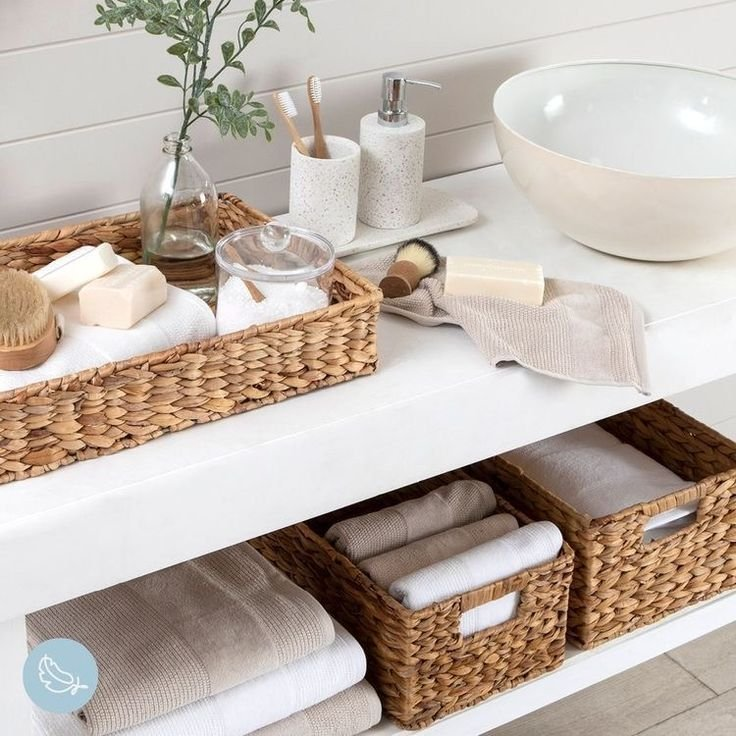
15. Anchor Everything With a Decorative Tray
If only one idea from this entire list gets tried, this is the one worth picking.
A tray instantly changes how a sink reads, since it creates a visual boundary that the eye interprets as organized, even when the actual items on it haven't changed.
Stone, wood, or matte black trays tend to look intentional without pulling focus. Keeping it to three items or fewer on the tray usually looks best.
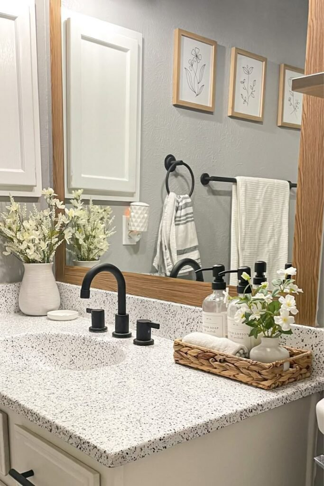
The Best Sinks Are the Most Edited Ones
None of these fifteen ideas require a renovation to make a real difference.
A tray, a matching set of accessories, and a bit of restraint tend to go further than any single expensive item ever could.
The best-styled sinks are usually the most edited ones. A few genuinely good pieces, with room left to breathe, will always read as more intentional than a counter filled to the edges.
Start with the tray, and let the rest follow from there.